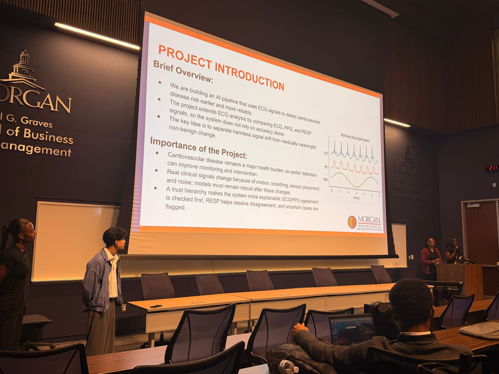
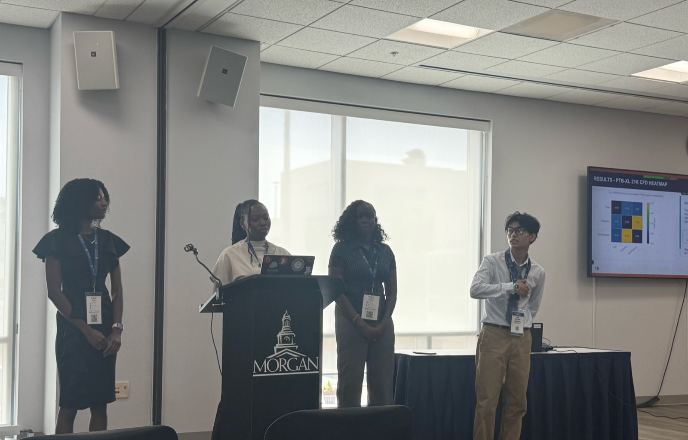

HAX Lab
Undergraduate researcher under the lab's director.
Undergraduate researcher under the lab's director.
I engineered a multimodal concept-drift detection pipeline for early cardiovascular disease prediction. The core is a three-branch architecture: a 1D CNN reading the time domain, a 2D CNN reading time-frequency representations, and a Transformer reading frequency-domain patterns, trained across ECG and PPG signals in PyTorch. It reached 87.86% drift-classification accuracy with a 0.8446 energy-drift correlation.
Underneath that sits a cross-modal Complementary Feature Domain (CFD) preprocessing pipeline I built with pyCFD 3.0, NumPy, Pandas, and scikit-learn, processing over 30,000 physiological signals across PTB-XL (21,000 records) and MIMIC (10,000 segments) through four benchmarking experiments on three datasets. Externally validated on the held-out MIMIC waveform set, it beat ADWIN, Page-Hinkley, MMD, and Dropout Uncertainty baselines by up to 40 percentage points.

